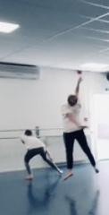
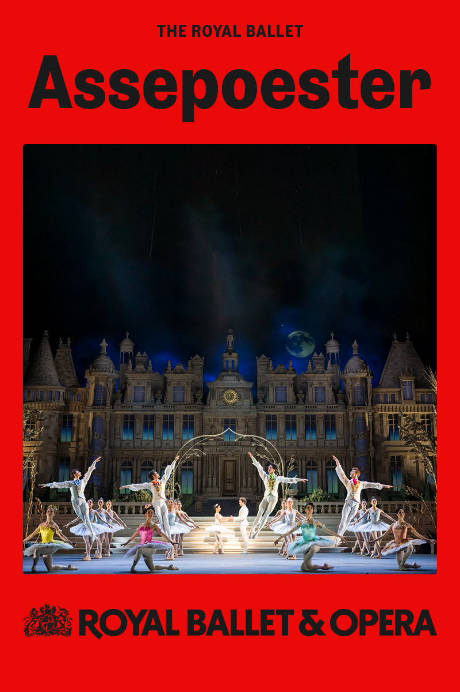

Dansplezier
Plezier in dansen is er voor groot en klein. Wij delen de liefde voor dans met jullie. .JPG) Wil je dit zelf ervaren? Kom vrijblijvend een proefles doen. Stuur een mail voor het aanvragen van een proefles contact
Wil je dit zelf ervaren? Kom vrijblijvend een proefles doen. Stuur een mail voor het aanvragen van een proefles contact
Dansrooster & jaarplanning
Rooster seizoen 24-25:
 Rooster 2024-2025
Rooster 2024-2025
Inschrijven voor seizoen 24-25: Inschrijfformulier --
Dance on Stage
 Op vrijdag 8 november is de eerste workshop van het Dansproject ‘Dance on Stage Overbetuwe’ in Theater De KiK in Elst. Een project speciaal voor jongeren in de Overbetuwe. Onder begeleiding van 2 professionele danscoaches organiseert Theater De KiK dansworkshops voor jongeren van middelbare schoolleeftijd. Voor de groep 12 t/m 15 jaar Urban Dance / Breakdance. Voor de deelnemers van 16+ Streetdance / Urban Dance / Hip Hop
Wil je ook meedoen? Als je op een middelbare school in de Overbetuwe zit, of in de Overbetuwe woont, mag je GRATIS deelnemen aan de workshops. Dans dus lekker mee tijdens de workshops en ontmoet andere jongeren of kom kijken op 13 december naar de finale, tijdens de finale zullen ook groepen van Babs Balletschool zich presenteren.
Inschrijven voor het project Dance On Stage Overbetuwe via https://theaterdekik.nl/projecten/dansproject/
Workshoptijden, 6 vrijdagavonden: 19:30 – 21:00 uur workshops Urban Dance / Breakdance 21:00 – 22:30 uur workshops Streetdance / Urban Dance / Hiphop Data: 8-11 – 15/11 – 22/11 – 29/11 – 6/12 – 13/12 (finale) Locatie: Theater De KiK, Dorpsstraat 39 Elst
Dit project is GRATIS voor de jongeren en wordt mogelijk gemaakt door: Fonds voor Cultuurparticipatie, Theater De KiK en Forte Jongerenwerk Overbetuwe.
Kijk lessen
in de week van 18 t/m 22 november zijn er weer kijk lessen. Ouders/familie zijn van harte welkom om tijdens de les naar de vorderingen te komen kijken.
Schoolreisje
 Mocht je het leuk vinden dan kun je in januari mee naar de voorstelling van Assepoester! kijk in de kleedkamer voor de aankondiging en inschrijving.
Ballet Spelletje Balletris
 Typ deze code in op je toetsenbord: ⬆⬆⬇⬇⬅➡⬅➡ ba
Typ deze code in op je toetsenbord: ⬆⬆⬇⬇⬅➡⬅➡ ba
Floor of Fame
 Onze vloer is een feit met dank aan alle lieve dansers, fans en de sponsor Go Cybersafe.
Onze vloer is een feit met dank aan alle lieve dansers, fans en de sponsor Go Cybersafe.
{kind=link}